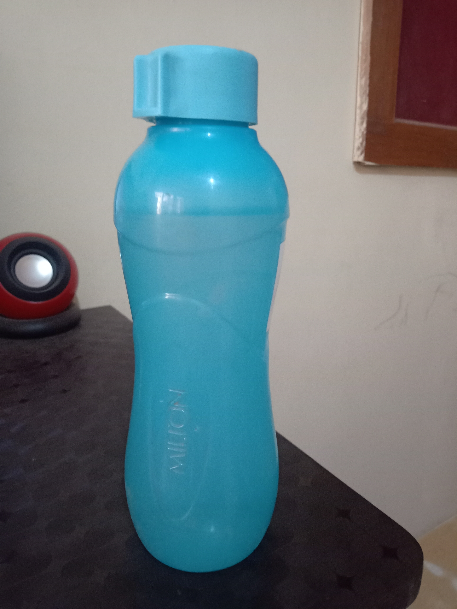
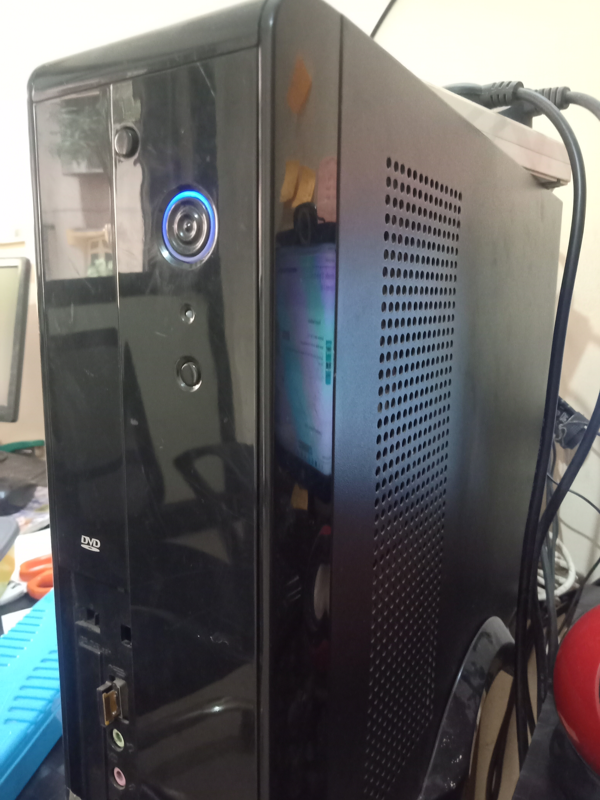

Test Image -

Output on Wolfram- vial
Output on Mobilenet Model- perfume, essence
Result - no one more accurate
Test Image -

Output on Wolfram- remote control
Output on Mobilenet Model- packet
Result -no one more accurate
Test Image -
Output on Wolfram- exercise bike
Output on Mobilenet Model- chair
Result - Mobilenet Model is more accurate
Test Image -

Output on Wolfram- laptop
Output on Mobilenet Model- desktop
Result - Mobilenet model is more accurate
Test Image -

Output on Wolfram- mixer
Output on Mobilenet Model- CPU
Result - mobilenet model is more accurate